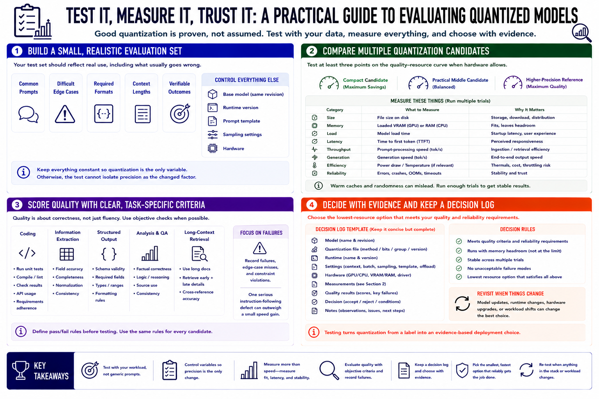

Testing Quantized Models
Connecting to LMS... Progress: in progress

Narration
Build a small evaluation set from the intended workload. Include common prompts, difficult edge cases, required formats, representative context lengths, and tasks with verifiable outcomes. Keep the base model, runtime, prompt template, sampling settings, and hardware constant while comparing quantization variants. Otherwise, the test cannot isolate precision as the changed variable.
Compare at least one compact candidate, one practical middle candidate, and a higher-precision reference when hardware allows. Measure file size, loaded VRAM or RAM, model load time, time to first token, prompt-processing speed, generation speed, power or temperature if relevant, and errors. Run multiple trials so warm caches and random output do not determine the result.
Score quality against predefined criteria. For coding, run tests. For extraction, compare fields. For structured output, validate the format. For analysis, review correctness and consistency. Long-context evaluation should use material that requires retrieval from different positions. Record failures, not only average impressions, because one serious instruction-following defect may outweigh a small speed gain.
Keep a concise decision log with model revision, quantization file, runtime version, settings, hardware, measurements, and acceptance result. Select the lowest-resource option that meets quality and reliability requirements with memory headroom. Revisit the decision when the model, runtime, hardware, or workload changes. Testing turns quantization from a label into an evidence-based deployment choice.